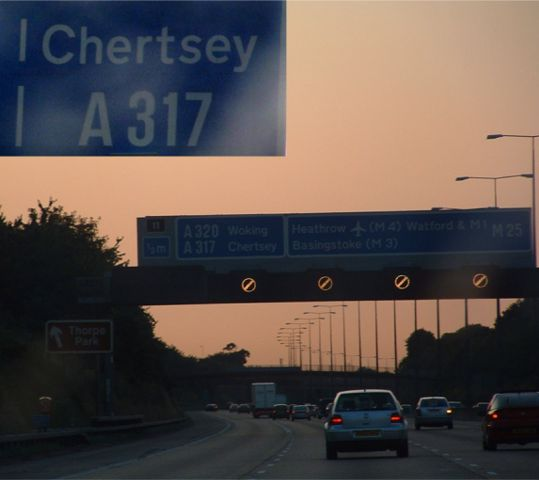
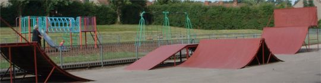
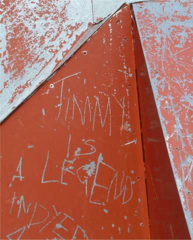
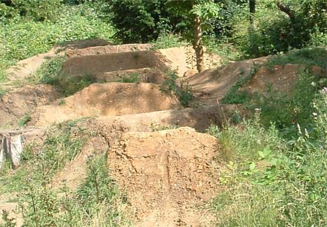

| a trip to reading: i went to reading a few days ago just to ride the parks a bit, as i got a lift there and back. here are a few pictures i took - none are of riding as you cant take pictures of yourself riding. |
 |
| yeh i want to go t chertsy, although apparently i can't ride there unless my name is on a list. i have no idea where it is anyway, but i always look at the sign when we go past it on the motorway. same with wisley as well. |
 |
| this is a little park hidden away in the gutter of reading. theres often glass around, but this time there wasn't much. the spine is nice and small. i learnt to ride it properly. everything else is far too close together to ride properly. |
 haha. i found this on another of the parks in reading.it seems that everyone one you meet in reading, who rides, knows someone who has been in a magazine. it's like the riding capital of the uk or something. i keep noticing street spots from reading in magazines too and there's a lot of a famous trails in that area. or maybe it's just people round there do internet stuff, so thats why i know about them. this park is too slippy for my liking. maybe it needs a paint. it's also full of pikeys. timmy: living legend |
 |
| these are the trails by the uni. it looks like they are not ridden anymore. there are a bit of a mess but they still look really fun to ride. trails always look better in the summer when they are all green. |
old news: 250603